Hello World
创建项目
这里创建是一个空白项目
点击查看创建详情
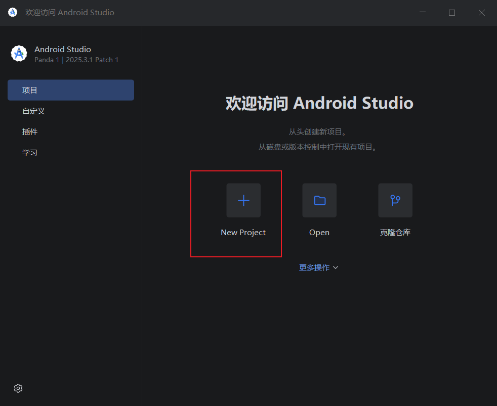
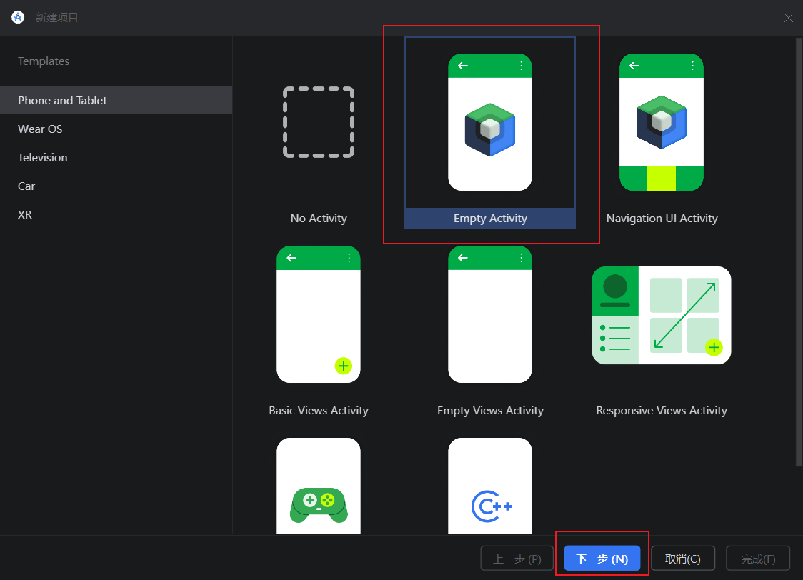
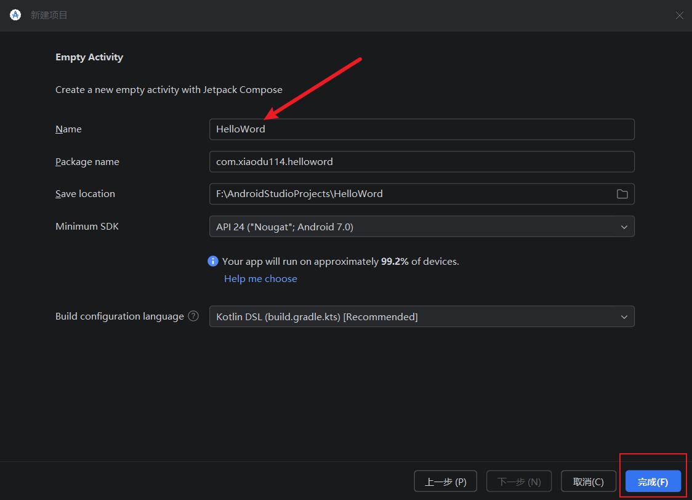
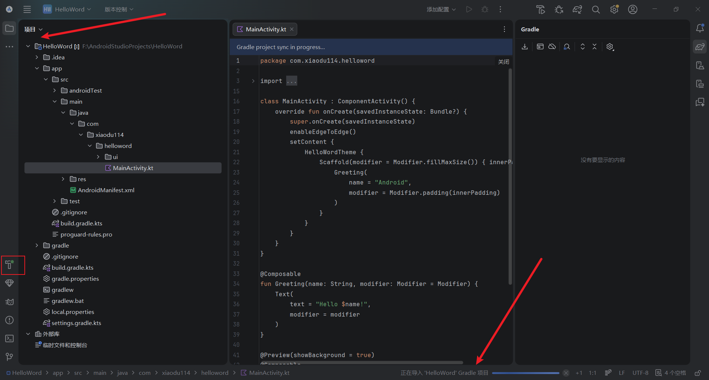
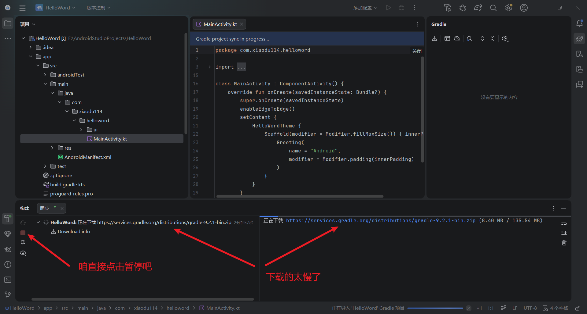
当你点击“完成”进入新创建的项目后，你会发现那个小锤子（对就是那个带绿点的小锤子）已经开始干活了：正在导入 “xxx” Gradle 项目。点击小锤子之后，你会发现正在下载东东：
Gradle 同步？构建？
默认的太慢了，必须得修改一下。咱也不知道学名是啥？是 Gradle？还是 maven？反正就是修改了两个文件：
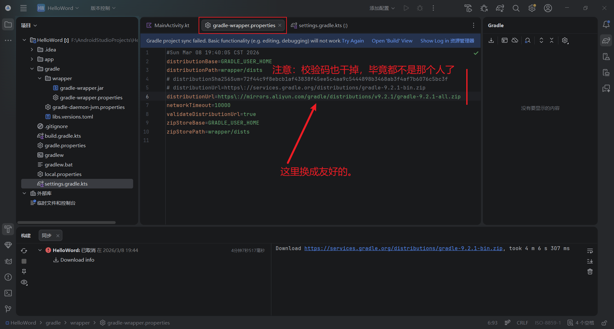
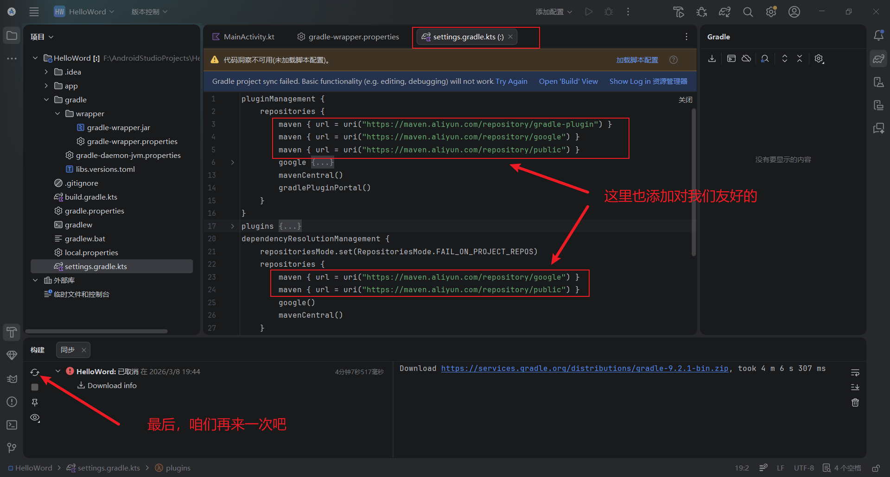
点击查看“gradle-wrapper.properties”详情
解决Gradle下载失败的问题（未配置却下载xx-src.zip的问题）经常写android的同学都知道，在打开新gra - 掘金，在此表示感谢
点击查看“settings.gradle.kts”详情
上面的弄完之后速度直接飞起
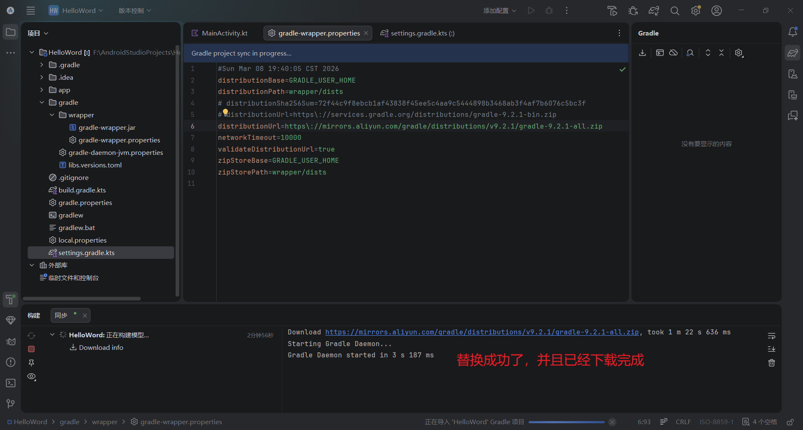
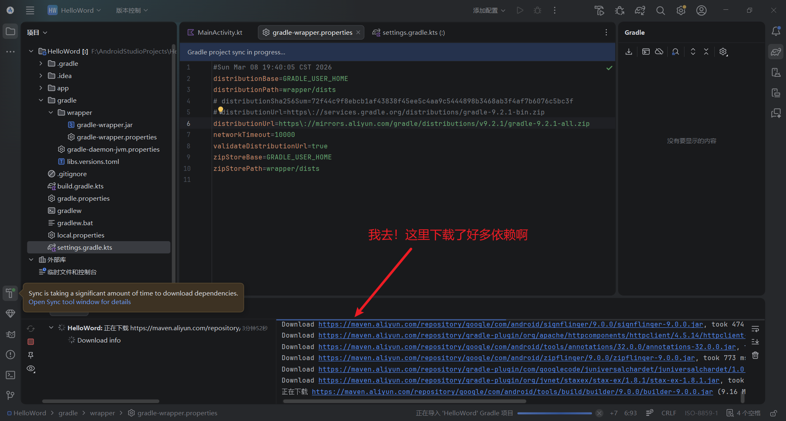
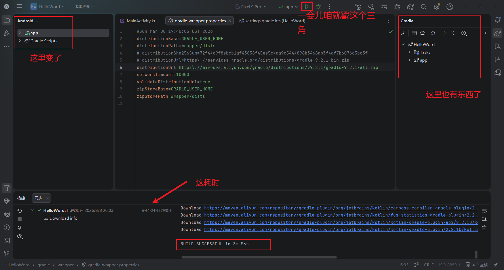
“BUILD SUCCESSFUL”
你注意到了吗？到了这里，他已经不是从前的他了，他变了
运行（Shift + F10）
构建成功之后，咱开始真正的运行了。对，就是点击那个漂亮的小三角……
点击查看详情
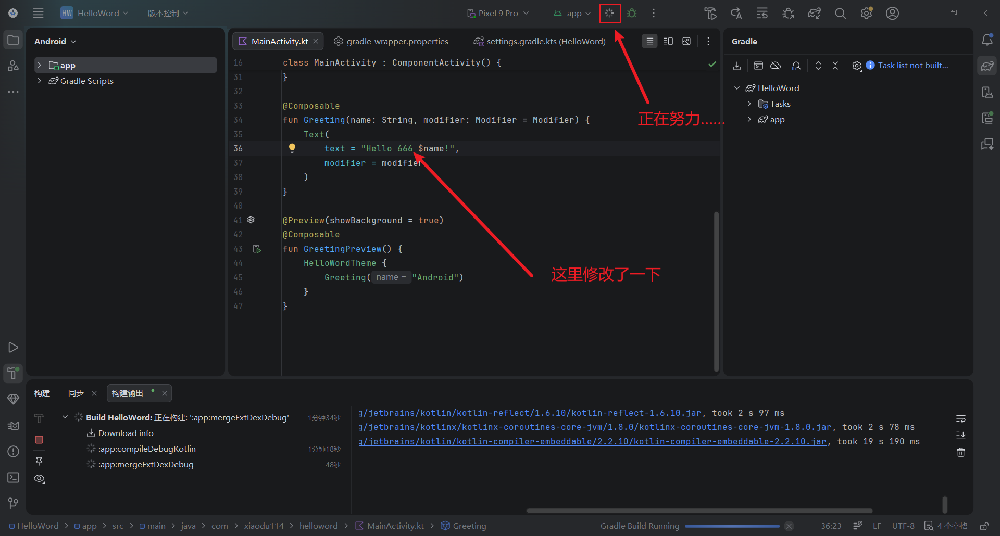
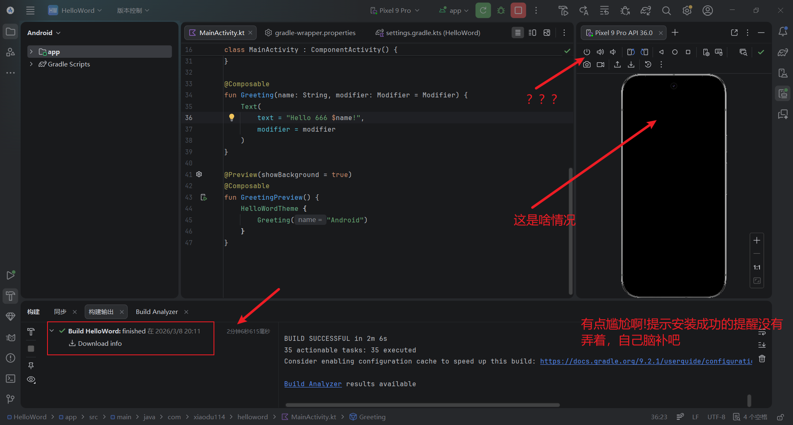
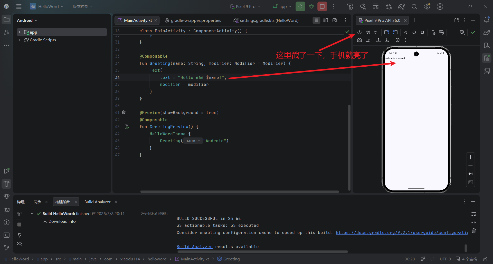
看到最后运行成功，还是无比的……
【额外的】Gradle 用户主目录
这是最后才发现的一个坑，弄完项目之后发现我的 C 盘可以用控件少了很多，一番排查才发现元凶：一个是
点击查看我的 C 盘是如何撑爆的


点击查看修改“Gradle 用户主目录”之后效果
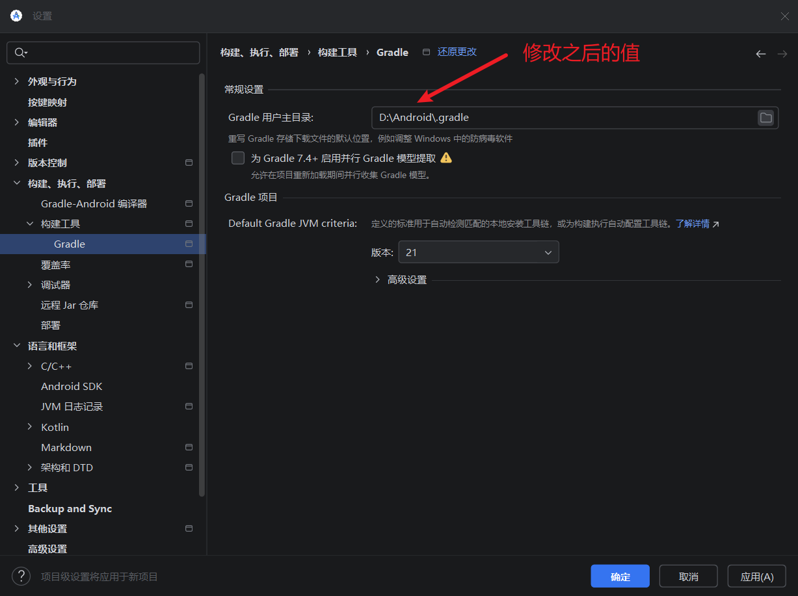
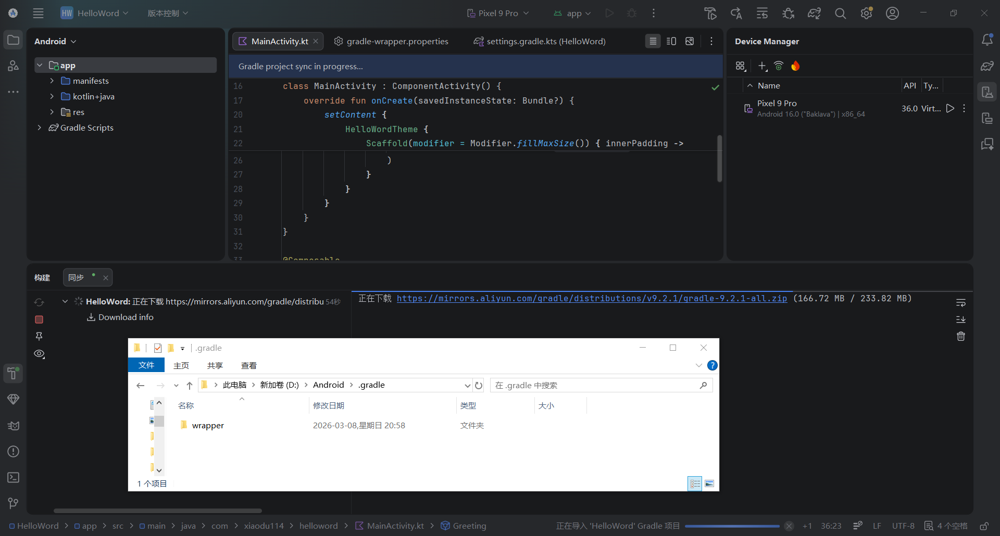
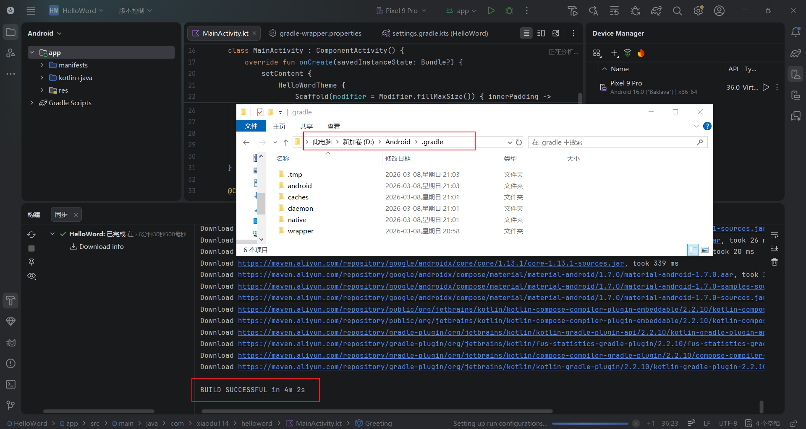